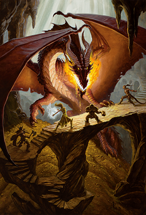
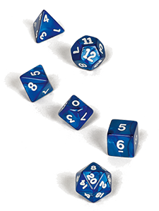

Overview

The Dungeons & Dragons roleplaying game is about storytelling in worlds of swords and sorcery. Like
games of make-believe, D&D is driven by imagination. It’s about picturing a crumbling castle in a
darkening forest and imagining how a fantasy adventurer might react to the challenges that scene
presents.
In this fantasy world, the possibilities are limitless.
Unlike a game of make-believe, D&D gives structure to the stories—a way of determining the consequences
of the adventurers’ actions. Players roll dice to determine whether their attacks hit or miss and
whether their characters can scale a cliff, roll away from the strike of a magical lightning bolt, or
pull off some other dangerous task. Anything is possible, but the dice make some things more probable
than others.
In this section, we look at the gameplay of Dungeons & Dragons as it unfolds according to this basic
pattern:
How to Play
1. THE DM DESCRIBES THE ENVIRONMENT.
The DM tells the players where their characters are and what's around them, presenting the options that
present themselves (how many doors lead out of a room, what's on a table, who's in the tavern, and so
on).
2. THE PLAYERS DESCRIBE WHAT THEY WANT TO DO.
Sometimes one player speaks for the whole party, saying, "We'll take the east door," for example. Other
times, different adventurers do different things: one adventurer might search a treasure chest while a
second examines a symbol engraved on a wall and a third keeps watch for monsters.
The players don't need to take turns, but the DM listens to every player and decides how to resolve
those actions.
3. THE DM NARRATES THE RESULTS OF THE ADVENTURERS'
ACTIONS.
Sometimes, resolving a task is easy. If an adventurer wants to walk across a room and open a door, the
DM might just say that the door opens and describe what lies beyond. But the door might be locked, the
floor might hide a deadly trap, or some other circumstance might make it challenging for an adventurer
to complete a task. In those cases, the DM decides what happens, often relying on the roll of a die to
determine the results of an action.
Describing the results often leads to another decision point, which brings the flow of the game right
back to step 1. This pattern holds whether the adventurers are exploring a ruin, talking to a devious
prince, or locked in combat against a mighty dragon. In certain situations, particularly combat, the
action is more structured and the players (and DM) do take turns choosing and resolving actions. But
most of the time, play is fluid and flexible, adapting to the circumstances of the adventure.
Game Dice

Does an adventurer’s sword swing hurt a dragon or just bounce off its iron-hard scales? Will the ogre
believe an outrageous bluff? Can a character swim across a raging river? Can a character avoid the main
blast of a fireball, or does he or she take full damage from the blaze? In cases where the outcome of an
action is uncertain, the game relies on rolls of a 20-sided die, a d20, to determine success or failure.
Ability checks, attack rolls, and saving throws are the three main kinds of d20 rolls, forming the core
of the rules of the game. All three follow these simple steps:
1. ROLL THE DIE AND ADD A MODIFIER.
Roll a d20 and add the relevant modifier. This is typically the modifier derived from one of the
characters' ability scores, and it sometimes includes a proficiency bonus to reflect a character's
particular skill.
2. APPLY CIRCUMSTANTIAL BONUSES AND PENALTIES.
A class feature, a spell, a particular circumstance, or some other effect might give a bonus or penalty
to the check.
3. COMPARE THE TOTAL TO A TARGET NUMBER.
Describing the results often leads to another decision point, which brings the flow of the game right
back to step 1.
If the total equals or exceeds the target number, the ability check, attack roll, or saving throw is a
success. Otherwise, it's a failure. The DM is usually the one who determines target numbers and tells
players whether their ability checks, attack rolls, and saving throws succeed or fail.
The target number for an ability check or a saving throw is called a Difficulty Class (DC). The target
number for an attack roll is called an Armor Class (AC).
What's Next?
Now you've learned the basics, it's time to dive into character creation. Before you do that, it is good
to learn classes and races.
There are many races and classes you can choose in Dungeons & Dragons. If you want to create a greater
variety of characters, check out the Character Creation section.